Гештальт-терапия — это метод психотерапии, направленный на работу с сознанием и восприятием человека, а также его эмоциональными и психологическими состояниями. В последние годы обучение гештальт-терапии стало доступно в удобном дистанционном формате, что позволило многим будущим гештальт-терапевтам пройти курсы, не покидая дома. Программы дистанционного обучения включают теоретические занятия, практическую психотерапию и супервизию, а также обучение основам гештальт-подхода. В этой статье мы представляем рейтинг лучших онлайн-программ по гештальт-терапии в 2026 году, которые помогут освоить необходимые навыки и получить квалификацию гештальт-терапевта, соответствующую международным стандартам.
Информация обновлена:
ТОП онлайн-курсов обучения гештальт-терапии
- 🏆 Гештальт-терапия в психологическом консультировании — МИП (по промокоду onlinekursy скидка 🎁 10%)
- 🏆 Гештальт-терапевт — Онлайн Институт Smart
- 🏆 Гештальт-терапия — Talentsy (по промокоду EDPART5 скидка 🎁 5%)
- Гештальт-терапия в практике психолога — НАДПО (по промокоду onlinekursy действует скидка 🎁 5%)
- «Гештальт-терапевт» + MBA — МИПО психология (по промокоду onlinekursy 🎁 скидка 5%)
- Обучение гештальт терапии — МШПП
- Техники и навыки гештальт-терапии — МИП (по промокоду kursy скидка 🎁 10%)
- Гештальт-консультант в психологической практике – АНО ДПО «Институт прикладной психологии в социальной сфере»
- Гештальт-терапия — MITM
- Гештальт-терапевт + MBA — МИПО (по промокоду onlinekursy действует скидка 🎁 10%)
- Гештальт-консультирование в психологической практике — ИППСС
- Гештальт – терапия в практике психолога — ИПО
- Гештальт-терапия в практике психолога — НЦРДО (по промокоду onlinekursy действует скидка 🎁 5%)
- Гештальт-терапия в практике психолога — ЦАППКК (по промокоду onlinekursy действует скидка 🎁 5%)
- Онлайн-курсы гештальт-терапии — МШП
- Гештальт-терапия и супервизия — Международный Институт Гештальт-Анализа
Отличительные преимущества каждого курса обучения по гештальт-терапии
| № | Название курса и школы | Отличия | Ссылка |
|---|---|---|---|
| 🥇 | Гештальт-терапия в психологическом консультировании — МИП | Диплом с международным приложением, супервизии, карьерный центр, подход для начинающих | Перейти |
| 🥈 | Гештальт-терапевт — Онлайн Институт Smart | Диплом MBA, доступ к клиентам, членство в ОППЛ, личная терапия | Перейти |
| 🥉 | Гештальт-терапия — Talentsy | Mini-MBA, 80+ часов практики, фокус на продвижение, работа с телесностью | Перейти |
| 4 | Гештальт-терапия в практике психолога — НАДПО | Фокус на практику с 1 дня, упаковка личного бренда, библиотека ЛитРес | Перейти |
| 5 | «Гештальт-терапевт» + MBA — МИПО Психология | 3 диплома, акцент на бизнес-навыки, карьерный коучинг | Перейти |
| 6 | Обучение гештальт терапии — МШПП | 740–860 часов, 200+ часов практики, поддержка 24/7, mini-MBA | Перейти |
| 7 | Техники и навыки гештальт-терапии — МИП | Краткосрочный (3 мес.), акцент на технику, телесная терапия | Перейти |
| 8 | Гештальт-консультант — ИППСС | Архив 1000+ записей, личная терапия включена, диплом с правом практики | Перейти |
| 9 | Гештальт-терапия — MITM | 1500 часов, глубокая практика, гос. диплом, акцент на телесность | Перейти |
| 10 | Гештальт-терапевт + MBA — МИПО | Фокус на бизнес-психологию, международная сертификация | Перейти |
| 11 | Гештальт-консультирование — ИППСС | ФИС-ФРДО, 10 000+ вебинаров, личный бренд и маркетинг | Перейти |
| 12 | Гештальт – терапия — ИПО | 2 курса в подарок, кейсы и воркшопы, сопровождение HR | Перейти |
| 13 | Гештальт-терапия — НЦРДО | ФГОС, поддержка HR, доступ к ЭБС и ЛитРес, доступная цена | Перейти |
| 14 | Гештальт-терапия — ЦАППКК | Низкая цена, авторские методики, диплом в ФИС ФРДО | Перейти |
| 15 | Онлайн-курсы гештальт-терапии — МШП | Курс за 5 недель, гибкий формат, подходит для новичков | Перейти |
| 16 | Гештальт-терапия и супервизия – Международный Институт Гештальт-Анализа | Сертификация EAGT, карьерный рост, участие в конференциях | Перейти |
1. 🏆 Гештальт-терапия в психологическом консультировании – Московский институт психологии

- ✅ Официальный сайт: mip.institute
- 💸 Цена: от 150 000 ₽ (со скидкой 30%)
- 💳 Рассрочка: от 12 500 ₽/мес, доступна для всех форматов
- 📚 Формат: дистанционный формат: лекции, тесты, домашние задания, супервизии, интервизии, групповые проекты
- ⏳ Продолжительность: 8 или 14 месяцев (в зависимости от тарифа)
- 📜 Документ: диплом о профессиональной переподготовке, международное приложение
- 📝 Трудоустройство: доступ в карьерный центр и профессиональное сообщество института
- 🔷 Для кого подходит курс: начинающим в психологии, желающим получить диплом, действующим специалистам без документа, тем, кто хочет освоить профессию семейного терапевта или работать онлайн
Особенности:
Программа подходит тем, кто хочет освоить методы гештальт-терапии в дистанционном формате и получить диплом установленного образца. Обучение проходит онлайн, что дает гибкость и возможность совмещать его с личной терапией, работой и другими обязанностями. Включает как индивидуальные сессии, так и групповую терапию, что особенно важно для будущих семейных психологов. Студенты осваивают не только теоретические аспекты, но и практические навыки консультирования с применением методов гештальт-подхода. Выпускники могут начать частную практику или развивать карьеру в организации. Образование соответствует требованиям профессиональных стандартов и признано ассоциацией гештальт-терапии.
Чему учатся студенты:
- Применять принципы гештальт-терапии в индивидуальной терапии и семейном консультировании
- Выстраивать эффективные клиент-терапевтические отношения
- Работать с тревожностью, внутренними конфликтами и психосоматикой
- Использовать техники наблюдения, феноменологического анализа и эксперимента
- Вести групповую психотерапию и участвовать в супервизиях
- Развивать навыки самопринятия, эмоциональной регуляции и самовыражения
Преподаватели:
- Додонова Ирина Викторовна — практикующий психолог, сертифицированный коуч ICU и ICA, автор книг, руководитель программы
- Валуев Олег Сергеевич — консультирующий психолог экзистенциального направления, автор 150+ научных статей, медиа-аналитик, разработчик практик
Преимущества:
- Удобный дистанционный формат обучения из любой точки мира
- Дипломы с международным приложением, признанные в профессиональных кругах
- Включение в профессиональное сообщество и ассоциацию гештальт-терапии
- Возможность освоить практическую психотерапию с нуля
- Программа охватывает как индивидуальные, так и групповые форматы консультирования
- Курс соответствует стандартам EAGT и требованиям профессиональной подготовки
- Преподаватели с опытом от 7 до 25 лет в психотерапии
- Гибкий график обучения без отрыва от текущей работы
Отзывы учеников:
Студенты отмечают высокий уровень подготовки и насыщенную практику. Особо подчеркивают полезность занятий по гештальт-подходу, удобный онлайн-формат и возможность совмещать обучение с личной жизнью. Программа получила положительные оценки за структурированность, поддержку кураторов и участие в супервизиях.
Перейти на официальный сайт курса2. 🏆 Гештальт-терапевт — Онлайн Институт Smart

- ✅ Официальный сайт: smart-inc.ru
- 💸 Цена: от 254 900 ₽ (со скидкой -35%)
- 💳 Рассрочка: от 10 621 ₽/мес на 3–24 месяца, без переплат
- 📚 Формат: дистанционный формат: видеолекции 24/7, тесты, задания, супервизии, онлайн-сессии, работа в тройках
- ⏳ Продолжительность: от 12 до 16 месяцев, в зависимости от пакета
- 📜 Документ: диплом о профессиональной переподготовке, диплом MBA, диплом международного образца
- 📝 Трудоустройство: центр карьеры, сопровождение, доступ к клиентам, участие в программе SmartMental
- 🔷 Для кого подходит курс: начинающие, практикующие психологи, педагоги, психотерапевты, все желающие сменить профессию или получить дополнительную квалификацию
Особенности:
Обучение по направлению гештальт-терапии проходит в удобном дистанционном формате. Студенты получают не только теоретические знания, но и обширную практическую подготовку, включая личную терапию, супервизии и практику в интервизионных чатах. Программа соответствует профессиональным стандартам и требованиям международных ассоциаций гештальт-терапии. Курс открывает возможность применять методы гештальт-подхода как в индивидуальной терапии, так и в групповой психотерапии и семейном консультировании. После завершения курса выпускники получают официальные документы и могут присоединиться к ассоциации гештальт-терапевтов. Форматы обучения гибкие, а кураторы и менторы сопровождают студентов на всех этапах обучения.
Чему учатся студенты:
- Применению методов гештальт-терапии в индивидуальной и групповой терапии
- Работе с травмами, кризисами и эмоциональным выгоранием
- Навыкам консультирования в семейной терапии и личной терапии
- Анализу снов, образов, телесных феноменов в терапевтическом процессе
- Построению терапевтических отношений и ведению супервизий
- Использованию принципов «здесь и сейчас» и гештальт-контакта
Преподаватели:
- Мария Шульгина — магистр психологии, тренер Московского гештальт института, гештальт-терапевт с более чем 20-летним опытом
- Виктория Ашихмина — психолог, преподаватель и практик, представитель института Smart
Преимущества:
- Удобный дистанционный формат с доступом к платформе 24/7
- Поддержка кураторов, менторов и клиентского сервиса на всех этапах
- Официальный диплом, признанный в России и за рубежом
- Включение в сообщество практикующих психологов и участие в международных программах
- Возможность начать личную практику уже во время обучения
- Членство в Общероссийской профессиональной психотерапевтической лиге (ОППЛ)
- Групповая терапия, супервизии и личные разборы кейсов в программе
- Обучение ведут практикующие специалисты, а не теоретики
Отзывы учеников:
Студенты особенно хвалят формат онлайн-обучения, индивидуальный подход и практическую направленность. Многие отмечают, что курс помог не только освоить профессию, но и проработать личные запросы в рамках терапии. Высокая оперативность кураторов и тьюторов делает обучение комфортным, а полученные навыки — востребованными на практике.
Перейти на официальный сайт курса3. 🏆 Гештальт-терапия – онлайн-университет Talentsy
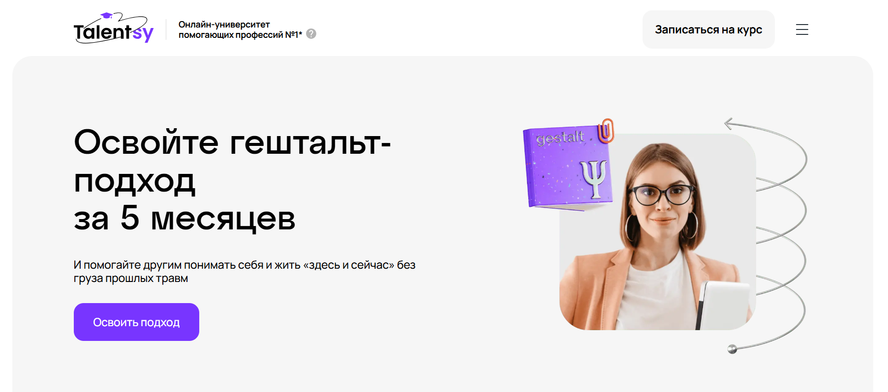
- ✅ Официальный сайт: talentsy.ru
- 💸 Цена: от 165 000 ₽ со скидкой 40%
- 💳 Рассрочка: от 6 875 ₽ в месяц на 24 месяца, первый платеж через 2 месяца.
- 📚 Формат: видеолекции, Zoom-семинары, практикумы, домашние задания, интервизии и супервизии.
- ⏳ Продолжительность: 5 месяцев.
- 📜 Документ: удостоверение о повышении квалификации + международный диплом mini-MBA.
- 📝 Трудоустройство: обучение продвижению и получению первых клиентов входит в курс.
- 🔷 Для кого подходит курс: для студентов и начинающих психологов, практикующих специалистов, желающих освоить гештальт-подход и начать консультирование.
Особенности:
Обучение проводится в удобном дистанционном формате, где особое внимание уделяется практическим навыкам гештальт-терапевта. Онлайн-программа соответствует стандартам eagt и подходит как для индивидуальной терапии, так и для групповой психотерапии. Школа сотрудничает с международной ассоциацией гештальт-терапии и предлагает актуальные техники и методы, востребованные в практике психологов. После завершения обучения выпускники получают дипломы, внесенные в реестр Минобрнауки, и могут применять полученные знания в семейном консультировании, личной терапии, а также в рамках практической психотерапии. Студенты осваивают навыки, которые позволяют применять гештальт-терапию в работе с разными клиентами, включая тех, кто обращается за помощью в сложных жизненных ситуациях.
Чему учатся студенты:
- Основам гештальт-подхода и его принципам
- Методам индивидуальной и групповой терапии
- Работе с эмоциями, телесными ощущениями, внутренними конфликтами
- Навыкам консультирования в онлайн формате
- Построению терапевтических отношений
- Разработке личного стиля и техник сопровождения клиента
- Применению супервизии и интервизии в психологической практике
Преподаватели:
- Мартиросян Анна Анатольевна — практикующий гештальт-терапевт, супервизор, преподаватель курса
- Соколова Светлана Николаевна — клинический психолог, автор программ по гештальт-подходу
- Дмитриев Алексей Юрьевич — психолог, тренер, ведущий групповых консультаций
Преимущества:
- Программа разработана при поддержке международной ассоциации гештальт-терапии
- Доступ к учебным материалам 24/7 и поддержка кураторов на всех этапах обучения
- Сильная практика — более 80 часов индивидуальных и групповых консультаций
- После окончания курса — сопровождение в запуске частной практики
- Возможность совмещать обучение с работой благодаря дистанционному формату
- Выдается официальное удостоверение и диплом mini-MBA
- Упор на практическую психотерапию и развитие навыков консультирования
- Курс соответствует профессиональным стандартам и подходит под налоговый вычет
Отзывы учеников:
Студенты отмечают насыщенность практической части курса, заботливое сопровождение и удобный дистанционный формат. Большинство положительно оценивает качество преподавания и возможность гибкого графика. Также выделяют, что курс помогает освоить профессию гештальт-терапевта с нуля и уверенно начать консультативную деятельность.
Перейти на официальный сайт курса4. Гештальт-терапия в практике психолога — Национальная академия дополнительного профессионального образования
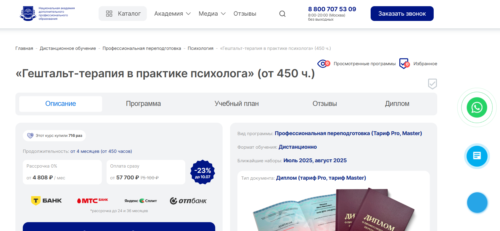
- ✅ Официальный сайт: nadpo.ru
- 💸 Цена: от 57 700 ₽ ( скидка 23%, была 75 100 ₽).
- 💳 Рассрочка: 0% до 36 месяцев, от 4 808 ₽ в месяц.
- 📚 Формат: дистанционный формат — видеолекции, домашние задания, практика, доступ к библиотекам ЛитРес и Библиоклуб.
- ⏳ Продолжительность: от 4 месяцев, от 450 часов.
- 📜 Документ: диплом установленного образца (тарифы Pro и Master).
- 📝 Трудоустройство: поддержка от HR-наставника и партнёров, карьерные консультации во время обучения.
- 🔷 Для кого подходит курс: начинающим и практикующим психологам, желающим овладеть практической психотерапией и дистанционной формой консультирования.
Особенности:
Программа ориентирована на освоение гештальт подхода с первых занятий. Обучение проходит полностью онлайн, что делает его доступным в любом удобном формате. Более 30% учебного времени занимает практика, в том числе в индивидуальной терапии и групповой психотерапии. Студенты изучают методы гештальт-терапии, получают доступ к супервизии и рекомендациям по развитию личного бренда. Гибкий график обучения позволяет совмещать курс с работой. После окончания обучения выпускники получают диплом и могут вести семейное консультирование, индивидуальные сессии или начать онлайн-практику. Спрос на гештальт терапевтов и специалистов в сфере практической психотерапии стабильно растёт.
Чему учатся студенты:
- Применять принципы гештальт-терапии в работе с клиентами
- Вести индивидуальные терапевтические сессии и групповую терапию
- Проводить онлайн-консультирование по гештальт-подходу
- Оказывать поддержку при кризисах, травмах и стрессах
- Развивать навыки консультирования и построения терапевтических отношений
- Создавать личный бренд психолога в социальных сетях
Преподаватели:
- Кадина Виктория — эксперт по личному бренду, PR и маркетингу, более 6 лет опыта в интернет-продвижении.
Преимущества:
- Дистанционное обучение без выходных — в любом удобном формате
- Государственная лицензия и соответствие ФГОС
- Доступ к практическим заданиям и записям терапевтических сессий
- Рассрочка без переплат + кэшбэк за повторное обучение
- Упаковка личного бренда психолога с поддержкой эксперта
- Постоянное обновление программы с учётом профессиональных стандартов
- Помощь в трудоустройстве и карьерное сопровождение
- Членство в закрытых сообществах и форумах для обмена опытом
Отзывы учеников:
Выпускники отмечают удобный дистанционный формат, насыщенную практику, профессионализм кураторов. Особенно ценят возможность начать зарабатывать ещё во время обучения. Часто упоминают поддержку в карьерном росте и развитие личного бренда как весомое преимущество.
Перейти на официальный сайт курса5. «Гештальт-терапевт» + MBA – Московский Институт Профессионального Образования
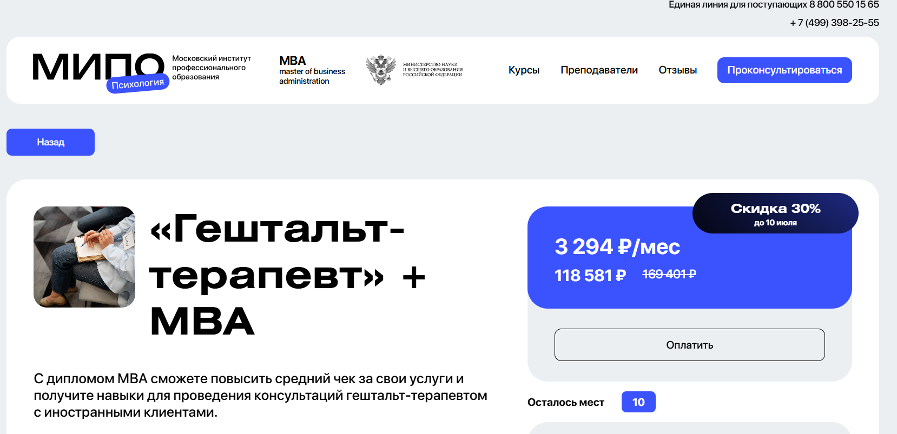
- ✅ Официальный сайт: mipoin.ru
- 💸 Цена: 118 581 ₽ (со скидкой 30%)
- 💳 Рассрочка: от 3 294 ₽/мес
- 📚 Формат: дистанционный формат — видеолекции, домашние задания, тесты, вебинары, кейсы
- ⏳ Продолжительность: 15 месяцев
- 📜 Документ: три диплома о профессиональной переподготовке и международное приложение
- 📝 Трудоустройство: возможность начать частную практику, расширить специализацию до бизнес-консультанта
- 🔷 Для кого подходит курс: для начинающих специалистов, действующих психологов, семейных терапевтов, работников образования
Особенности:
Курс сочетает гештальт терапию, практическую психологию и бизнес-навыки в удобном дистанционном формате. Программа разработана в соответствии с международными стандартами и включает в себя ключевые направления гештальт подхода, семейную терапию, групповую терапию, психологическое консультирование и карьерный коучинг. Обучение проходит с использованием реальных кейсов и домашних заданий, что позволяет студентам освоить навыки гештальт-терапевта уже на этапе обучения. Доступ к вебинарам и поддержке преподавателей позволяет эффективно сочетать обучение с личной терапией и практикой. Выпускники получают три диплома, включая квалификацию по MBA в бизнес-психологии.
Чему учатся студенты:
- Овладение техниками индивидуальной терапии и семейного консультирования
- Работа с сопротивлением в гештальт-терапии: ретрофлексия, интроекция, проекция
- Применение гештальт подхода в групповой психотерапии и терапии сновидений
- Навыки карьерного коучинга, бизнес-консультирования и командного взаимодействия
- Психодиагностика и психологическая помощь клиенту в различных жизненных ситуациях
Преподаватели:
- Дубровская Анастасия — профессиональный психолог, гештальт-терапевт
- Шушкина Людмила — семейный психолог, автор книг по популярной психологии
- Круглушина Олеся — консультирующий психолог, выпускник МГОУ
- Шавырина Анна — кандидат психологических наук, спикер городского экспертного совета
- Череменская Мария — специалист по гештальт терапии, выпускник МГУ
- Рыбальченко Наталья — преподаватель философии МГУ, консультирующий психолог
- Ильин Александр — специалист в инклюзии и сопровождении детей с ОВЗ
- Дарменко Елена — бизнес-тренер, научный специалист
- Лебедев Александр — доцент МГТУ и МГИМО, кандидат экономических наук
- Лаврова Юлия — гипнотерапевт, юридический психолог
- Латынцева Ольга — семейный психолог, тренер, эксперт на ТВ
Преимущества:
- Обучение проходит в дистанционном формате — удобно совмещать с работой
- Три диплома и международное приложение после окончания обучения
- Программа ориентирована на практическую психотерапию и навыки консультирования
- Возможность работы с иностранными клиентами после прохождения курса
- Включены техники для индивидуальной, семейной и групповой терапии
- Акцент на личную терапию и развитие профессионального бренда
- Регулярные вебинары и поддержка преподавателей и сообщества
- Четкая структура курса с понятными этапами обучения
Отзывы учеников:
Студенты часто отмечают гибкий график, удобный дистанционный формат и насыщенность программы. Преподаватели курса получили высокую оценку за профессионализм и вовлеченность. Отзывы подчеркивают практическую направленность курса, наличие обратной связи и доступ к методическим материалам, а также возможность начать работу сразу после окончания обучения.
Перейти на официальный сайт курса6. Обучение гештальт терапии – МШПП (Международная школа психологии и психотерапии)
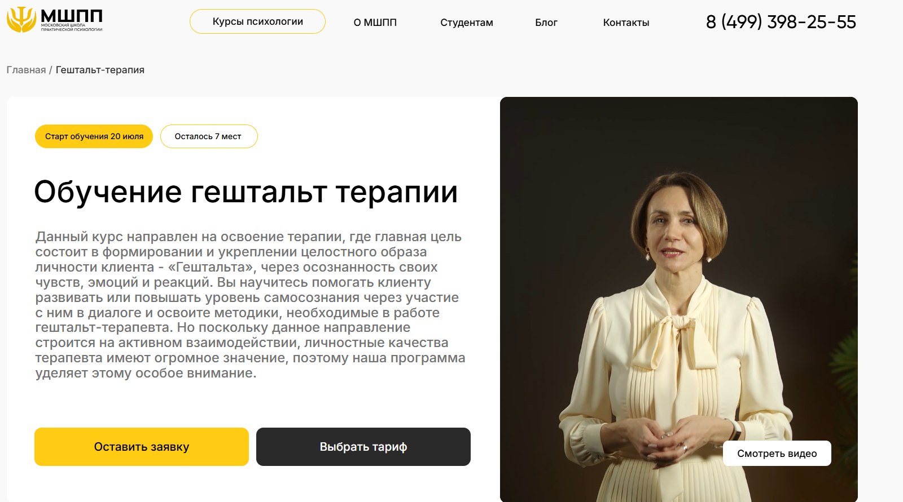- ✅ Официальный сайт: mspp.online
- 💸 Цена: от 95 000 ₽ до 195 000 ₽ в зависимости от тарифа
- 💳 Рассрочка: от 2 690 ₽/мес, от 3 до 36 месяцев, есть варианты без участия банков
- 📚 Формат: удобный дистанционный, видеолекции, домашние задания, практические занятия, тесты, супервизии, групповые практики
- ⏳ Продолжительность: 7 месяцев, включая подготовку и итоговую аттестацию
- 📜 Документ: диплом о профессиональной переподготовке установленного образца
- 📝 Трудоустройство: помощь центра карьеры: от выбора вакансии до прохождения испытательного срока
- 🔷 Для кого подходит курс: начинающим, практикующим психологам, студентам, желающим развить навыки и начать частную практику
Особенности:
Программа обучения выстроена по принципам гештальт-подхода с акцентом на практическую психотерапию и развитие личных терапевтических навыков. Курс подходит тем, кто хочет получить профессию психолога или расширить свою специализацию в индивидуальной терапии, семейном консультировании и групповой психотерапии. Занятия проходят в онлайн формате, что дает возможность совмещать учебу с работой. Студенты обучаются работать с клиентами в диалоге, используя методы гештальт-терапии и супервизии. Программа соответствует стандартам EAGT и включает в себя инструменты, применимые для ведения онлайн практики и создания личного кабинета психолога.
Чему учатся студенты:
- Методам гештальт-подхода в индивидуальной и групповой терапии
- Построению терапевтических отношений на основе диалога
- Работе с личной терапией и развитием самосознания
- Проведению консультаций с парами, семьями и детьми
- Профилактике профессионального выгорания
- Интеграции гештальт-подхода в другие направления психотерапии
Преподаватели:
- Программу разработали 44 эксперта — практикующие гештальт терапевты и психологи
- Все преподаватели являются членами профессиональных ассоциаций гештальт-терапии
- Кураторы — практикующие специалисты с супервизией
Преимущества:
- Программа включает 740–860 часов обучения, из которых более 200 часов — практика
- Мини-группы и супервизии для проработки навыков консультирования
- Онлайн-формат обучения позволяет учиться в удобное время
- Доступ к курсу и библиотеке сохраняется навсегда
- Получение международного диплома MBA после окончания
- Бонусные модули по онлайн-консультированию и личному бренду психолога
- Карьерный центр помогает с трудоустройством и прохождением собеседований
- Поддержка 24/7 на всей дистанции обучения
Отзывы учеников:
Студенты часто отмечают практикоориентированный подход, качественные видеоматериалы и живую обратную связь от преподавателей. Высоко ценится возможность освоить гештальт терапию дистанционно, без потери эффективности обучения. Многие подчеркивают важность менторской поддержки и живого сообщества выпускников.
Перейти на официальный сайт курса7. Техники и навыки гештальт-терапии — Московский институт психологии
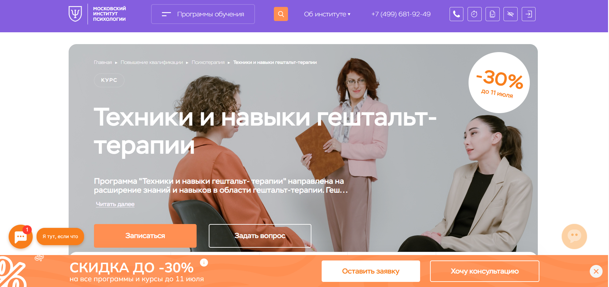- ✅ Официальный сайт: mip.institute
- 💸 Цена: 104 528 ₽ (скидка 30%, полная цена — 149 000 ₽)
- 💳 Рассрочка: возможна, подробности у менеджеров
- 📚 Формат: удобный дистанционный, онлайн-лекции, тесты, домашние задания, супервизии, разбор кейсов
- ⏳ Продолжительность: 3 месяца, 240 академических часов
- 📜 Документ: удостоверение о повышении квалификации с международным приложением
- 📝 Трудоустройство: курс помогает начать практическую психотерапию и работать официально
- 🔷 Для кого подходит курс: для начинающих, практикующих специалистов, а также тех, кто хочет применять гештальт-подход в личной жизни
Особенности:
Программа обучения в Московском институте психологии организована в дистанционном формате, что позволяет пройти курс без отрыва от основной деятельности. Курс включает лекции и практику, направленную на развитие навыков консультирования в индивидуальной терапии, а также в групповой и семейной терапии. Участники работают с демонстрационными сессиями, получают обратную связь, участвуют в интервизиях и супервизиях. Материалы курса соответствуют стандартам EAGT и подойдут тем, кто планирует сертификацию через международные ассоциации гештальт-терапии. После окончания обучения участники получают официальные документы и могут вести частную практику. Поддержка сообщества выпускников и преподавателей сохраняется и после завершения программы.
Чему учатся студенты:
- Применять методы гештальт-терапии в индивидуальных сессиях
- Работать с клиентскими запросами в семейном консультировании и групповой психотерапии
- Понимать и использовать основные принципы гештальта
- Вести анализ терапевтической сессии и соблюдать профессиональные стандарты
- Использовать техники эксперимента, феноменологического наблюдения и телесно-ориентированной терапии
Преподаватели:
- Овчинникова Татьяна Владимировна — практикующий психолог, сертифицированный гештальт-терапевт, телесно-ориентированный терапевт, амбассадор Российского общества «Знание», руководитель программы
Преимущества:
- Доступный формат занятий — обучение проходит онлайн в удобное время
- Программа учитывает современные подходы гештальт-терапии
- Подходит как для старта профессии, так и для повышения квалификации гештальт-терапевта
- Международное приложение к документу об окончании курса
- Курс дает навыки для реальной работы с клиентами и запуска практики
- Сопровождение опытными супервизорами и преподавателями-практиками
- Возможность работать дистанционно и начать карьеру в удобном формате
- Бесплатный доступ к материалам и библиотеке во время курса
Отзывы учеников:
В отзывах чаще всего упоминаются структурированная подача материала, практика на реальных кейсах и поддержка преподавателей. Многие студенты отмечают, что курс помог им обрести уверенность в проведении консультаций и перейти к самостоятельной работе с клиентами. Высоко оцениваются обратная связь и качество подготовки.
Перейти на официальный сайт курса8. Гештальт-консультант в психологической практике – АНО ДПО «Институт прикладной психологии в социальной сфере»
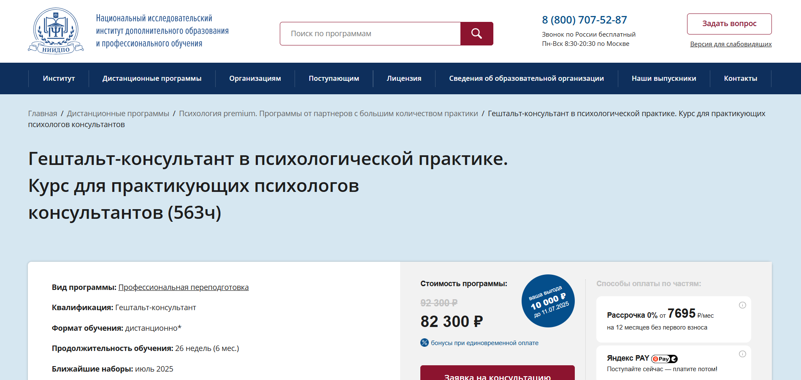
- ✅ Официальный сайт: niidpo.ru
- 💸 Цена: 82 300 ₽ ( экономия 10 000 ₽).
- 💳 Рассрочка: от 7 695 ₽/мес. на 12 месяцев без первого взноса.
- 📚 Формат: дистанционный формат — видеолекции, онлайн-практикумы, супервизии, тесты, вебинары, доступ к архиву из 1000+ записей.
- ⏳ Продолжительность: 6 месяцев (26 недель).
- 📜 Документ: диплом о профессиональной переподготовке с правом вести психологическую практику.
- 📝 Трудоустройство: обучение помогает внедрить гештальт-подход в работу и привлекать больше клиентов.
- 🔷 Для кого подходит курс: для действующих психологов, психотерапевтов, коучей, социальных работников с профильным образованием.
Особенности:
Курс создан для специалистов, желающих внедрить гештальт-терапию в свою практику и повысить качество оказываемой помощи. Формат полностью дистанционный — слушателям доступна современная платформа, материалы, супервизии и онлайн-вебинары. Программа выстроена на практическом опыте преподавателей — сертифицированных гештальт терапевтов и супервизоров. В процессе обучения студенты получают навыки групповой терапии, участвуют в триадах, проходят личную терапию и супервизорские сессии. Доступ к лекциям сохраняется бессрочно, а диплом института действителен на территории России и за рубежом. Программа соответствует стандартам ассоциации гештальт и направлена на развитие профессиональных навыков консультирования в онлайн формате.
Чему учатся студенты:
- Проводить сессии с клиентами от начала до завершения
- Использовать методы гештальт-терапии в индивидуальной терапии и семейном консультировании
- Определять сложности клиента и предлагать подходящие инструменты
- Понимать принципы гештальт подхода и применять их в терапевтическом процессе
- Работать в формате групповой психотерапии и использовать супервизию
- Поддерживать клиента в эмоциональной проработке и изменении паттернов поведения
Преподаватели:
- Арефьева Татьяна Владимировна — Психолог, гештальт терапевт, супервизор
- Бессонова Олеся Викторовна — Гештальт-терапевт, ведущая групп и обучающих программ
- Гладкая Юлия Александровна — Психолог, специалист в психодраме, арт-терапии, супервизор
Преимущества:
- Обучение проходит полностью в дистанционном формате без необходимости очного присутствия
- Выдается диплом установленного образца с бессрочной юридической силой
- Участие в групповой и личной терапии в рамках учебного процесса
- Возможность изучать гештальт терапию на практике под супервизией
- Доступ к большому количеству онлайн-вебинаров и архиву более 1000 записей
- Программа соответствует требованиям профессиональных стандартов
- Гибкая система оплаты — рассрочка без первого взноса
- Бонусы при единовременной оплате и скидки по срокам
Отзывы учеников:
Студенты отмечают насыщенность курса практикой, отзывчивость преподавателей и удобный дистанционный формат. Отдельно выделяют опыт работы с супервизорами и возможность личной терапии в рамках обучения. Программа помогает освоить реальные навыки консультирования, что положительно влияет на количество клиентов и профессиональный рост.
Перейти на официальный сайт курса9. Гештальт-терапия – Московский институт технологий и управления
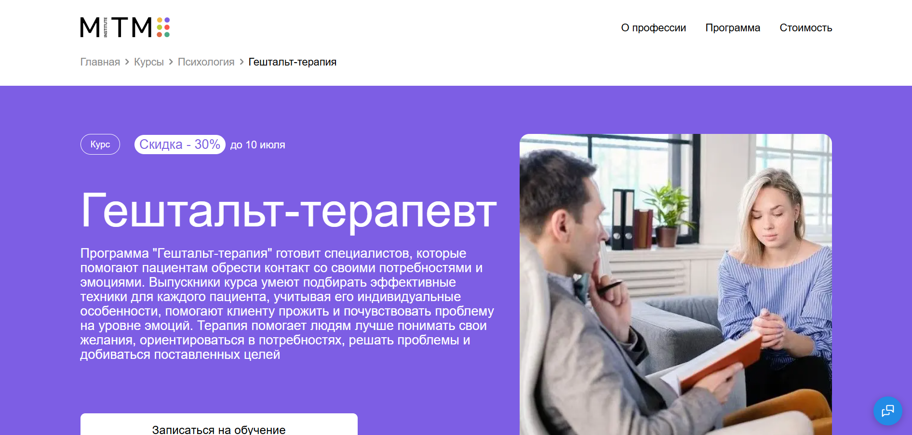
- ✅ Официальный сайт: mitm.institute
- 💸 Цена: 157 080 ₽13 090 ₽/мес, со скидкой 30% — 110 040 ₽/мес
- 💳 Рассрочка: 12 месяцев - 13 090 ₽/мес, со скидкой — 9 170 ₽/мес, беспроцентно через Тинькофф Банк
- 📚 Формат: дистанционный формат — видеолекции, задания, практика, встречи с экспертами
- ⏳ Продолжительность: 1 год, 1500 часов обучения
- 📜 Документ: диплом о профессиональной переподготовке государственного образца
- 📝 Трудоустройство: поддержка в освоении практики, подготовка к реальной работе
- 🔷 Для кого подходит курс: практикующим психологам и психотерапевтам, новичкам, студентам и всем, кто интересуется гештальт подходом
Особенности:
Программа реализуется в удобном дистанционном формате и подходит для тех, кто хочет совмещать обучение с работой или другими задачами. Участники изучают гештальт-терапию через личную и групповую терапевтическую практику. Акцент сделан на развитие навыков консультирования, понимание эмоциональных процессов и обучение методам работы с сопротивлением. В ходе обучения студенты получают поддержку кураторов, участвуют в супервизиях, обсуждают психологические аспекты фильмов и получают доступ к материалам, адаптированным под современные стандарты практической психотерапии. Обучение проходит по стандартам eagt и позволяет получить квалификацию гештальт-терапевта.
Чему учатся студенты:
- Принципам гештальт-подхода и методам психотерапии
- Анализу телесных и эмоциональных процессов в терапии
- Работе с прерыванием контакта и внутренними конфликтами
- Построению терапевтических отношений в индивидуальной терапии и групповой психотерапии
- Использованию техник гештальт-терапии в личной и профессиональной практике
- Применению подхода в семейном консультировании
Преподаватели:
- Лагунова Ирина Валерьевна — бизнес-тренер ISBT, более 5 лет практики, преподаватель с 15-летним стажем
- Цяпало Анна Владимировна — сексотерапевт, член Ассоциации психоаналитического коучинга
- Юферова Юлия Михайловна — психотерапевт, автор программ, эксперт портала Psychologies.ru
Преимущества:
- Удобный дистанционный формат с доступом к личному кабинету
- Поддержка куратора и супервизоров на протяжении всего обучения
- Погружение в индивидуальную и групповую терапию
- Обучение в институте гештальта, признанном по стандартам eagt
- Гибкий график без отрыва от основной деятельности
- Документ государственного образца после окончания курса
- Поддержка профессионального сообщества — Telegram-чат, разборы, обсуждения
- Практика, ориентированная на реальные запросы клиентов
Отзывы учеников:
Студенты отмечают комфортный дистанционный формат и насыщенность программы. Особо выделяют качество обратной связи от кураторов и преподавателей, возможность освоить личную терапию и развить практические навыки. Похвалу получает поддержка и участие в супервизиях, которые помогают глубже понять принципы гештальт-терапии.
Перейти на официальный сайт курса10. Гештальт-терапевт + MBA — Московский Институт Профессионального Образования
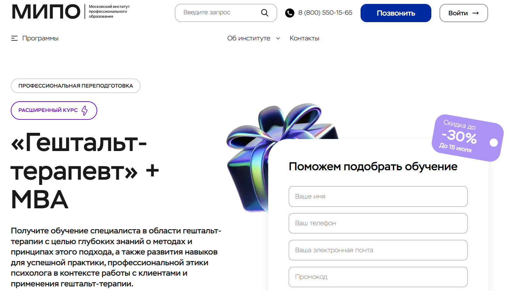
- ✅ Официальный сайт: mipo.msk.ru
- 💸 Цена обучения: от 105 538 ₽ (со скидкой до 30% при полной оплате)
- 💳 Рассрочка: от 4 398 ₽/мес на 24 месяца
- 📚 Формат: удобный дистанционный: онлайн-вебинары, видеозаписи, кейсы, тестирование, куратор, практические задания
- ⏳ Продолжительность: 1 год 3 месяца (998+692+256 часов)
- 📜 Документ: диплом о профессиональной переподготовке установленного образца, внесение в ФИС-ФРДО
- 📝 Трудоустройство: выпускники работают как частнопрактикующие гештальт-терапевты, зарабатывают от 100 000 ₽
- 🔷 Для кого подходит курс: начинающим, практикующим без диплома, тем, кто хочет применять гештальт подход в жизни и работе
Особенности:
Курс направлен на освоение практической психотерапии по гештальт-подходу и сочетает в себе обучение гештальт-терапевтов с элементами бизнес-психологии. Обучение проходит в дистанционном формате, что удобно для совмещения с работой. Студенты получают навыки консультирования, участвуют в онлайн-вебинарах, выполняют практические задания и проходят супервизии. По завершению курса выдается диплом, признанный в России и за рубежом. Программа соответствует стандартам EAGT и ориентирована на развитие профессиональной этики и компетенций психолога. Полученные знания применимы как в индивидуальной терапии, так и в семейном консультировании и групповой психотерапии.
Чему учатся студенты:
- Применению методов гештальт-терапии в индивидуальной и групповой терапии
- Работе со сновидениями как инструменту выявления внутренних конфликтов
- Преодолению механизмов сопротивления: проекции, дефлексии, ретрофлексии, интроекции
- Построению терапевтических отношений с клиентами в формате "здесь и сейчас"
- Диагностике психоэмоционального состояния клиентов
- Проведению семейной терапии и групповому консультированию
Преподаватели:
- Рыбальченко Наталья — преподаватель философии, выпускница МГУ, практикующий психолог
- Круглушина Олеся — семейный психолог, терапевт интегративного подхода
- Косина Алла — клинический и практикующий психолог, международная практика с 2007 года
- Дубровская Анастасия — гештальт-терапевт, автор курса по самооценке
Преимущества:
- Удобный формат дистанционного обучения без привязки к месту
- Сертификация и диплом, признанные международными ассоциациями
- Развитие навыков консультирования по гештальт-подходу
- Поддержка менторов, кураторов и службы заботы на всех этапах обучения
- Возможность работать онлайн с клиентами по всему миру
- Бонус — гайд по видам психотерапии в подарок при записи
- Обучение в институте с лицензией и регистрацией диплома в ФИС-ФРДО
Отзывы учеников:
Студенты отмечают высокий уровень преподавания и структурированный подход к обучению. Особенно ценят возможность совмещать учебу с работой, поддержку менторов и доступность материалов. Часто упоминается эффективность практических заданий и глубокое погружение в методы гештальт-терапии.
Перейти на официальный сайт курса11. Гештальт-консультирование в психологической практике – Институт прикладной психологии в социальной сфере
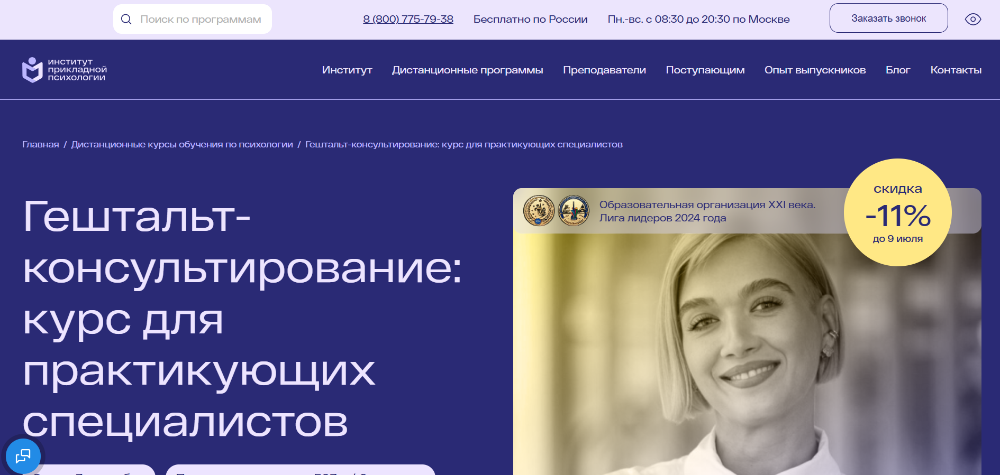
- ✅ Официальный сайт: ippss.ru
- 💸 Цена: 92 300 ₽ / 82 300 ₽ (со скидкой -11%)
- 💳 Рассрочка: 7 692 ₽/мес, доступна без переплат через банк или Яндекс Пэй
- 📚 Формат: дистанционный формат, видеолекции, тесты, домашние задания с обратной связью, супервизии, консультации
- ⏳ Продолжительность: 6,5 месяцев / 563 академических часа
- 📜 Документ: диплом о профессиональной переподготовке установленного образца с квалификацией «Гештальт-консультант»
- 📝 Трудоустройство: помощь в построении личного бренда, карьерные консультации, доступ к закрытому каналу с вакансиями
- 🔷 Для кого подходит курс: для специалистов с высшим образованием любого профиля, практикующих психологов и тех, кто хочет освоить гештальт подход
Особенности:
Курс предлагает удобный дистанционный формат без необходимости приезжать в институт. Подготовка проводится по профессиональным стандартам, включая практическую психотерапию и принципы гештальт-терапии. Студенты получают доступ к 10 000+ вебинарам, участвуют в групповых консультациях, супервизиях, терапевтических сессиях и осваивают индивидуальную и семейную терапию. Учебный процесс организован гибко, что позволяет совмещать обучение с работой. Выпускники получают диплом, зарегистрированный в ФИС ФРДО, и могут официально практиковать как гештальт терапевты.
Чему учатся студенты:
- Применению методов гештальт-терапии в индивидуальной терапии
- Проведению групповой терапии и участию в супервизиях
- Работе с чувствами в формате психологического консультирования
- Диагностике и составлению программ тренингов
- Построению терапевтических отношений и оказанию психологической помощи
- Работе в рамках гештальт подхода с тревожностью, виной, утратой и конфликтами
- Проведению консультаций онлайн и офлайн
Преподаватели:
- Бессонова Олеся Викторовна — практикующий психолог, гештальт-терапевт, супервизор, ведущая образовательных программ
- Кутумова Белла Евгеньевна — сертифицированный гештальт-терапевт, член ассоциации гештальт, семейный терапевт
- Растольцева Елена Константиновна — преподаватель психологии, супервизор, биографический консультант, специалист в интегративном подходе
Преимущества:
- Поддержка личного бренда и карьеры психолога
- Гибкий учебный график с возможностью совмещения с работой
- Погружение в гештальт подходу через практику и теорию
- Доступ к огромной библиотеке вебинаров и дополнительным материалам
- Опытные преподаватели — практикующие гештальт терапевты
- Дистанционный формат обучения из любой точки мира
- Регистрация диплома в ФИС ФРДО и возможность официальной практики
- Участие в терапевтической группе и получение личной терапии
Отзывы учеников:
Слушатели отмечают высокий уровень преподавания, проработку практических навыков и сильную поддержку на этапе обучения. Часто подчеркивают удобный дистанционный формат, насыщенность курса и возможность применять полученные знания в реальной работе с клиентами. Большинство довольны сопровождением на протяжении всего процесса и качественной обратной связью от преподавателей.
Перейти на официальный сайт курса12. Гештальт – терапия в практике психолога – Институт Профессионального Образования
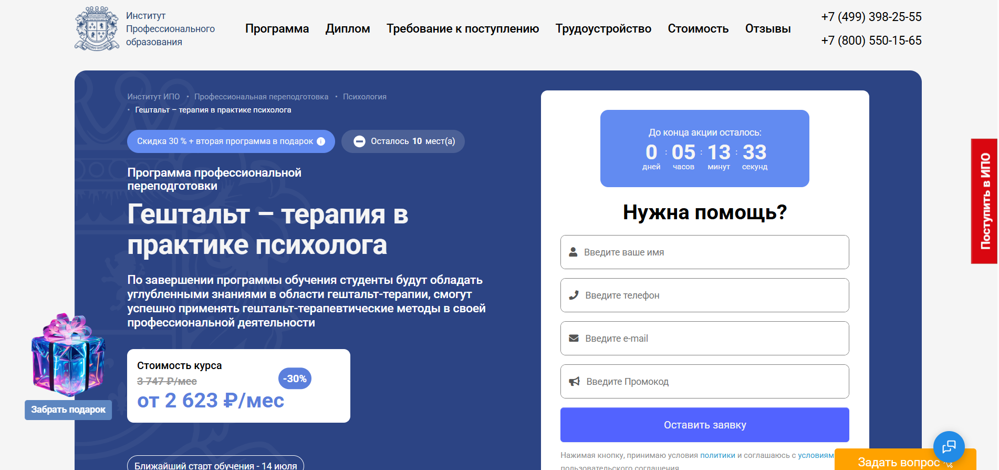
- ✅ Официальный сайт: ipo.msk.ru
- 💸 Цена: от 62 952 ₽ (со скидкой 30%)
- 💳 Рассрочка: от 2 623 ₽/мес до 24 месяцев, оплата без переплат
- 📚 Формат: удобный дистанционный, видеолекции, тесты, домашние задания, практика, воркшопы, киноклуб
- ⏳ Продолжительность: 6 месяцев, 692 академических часа
- 📜 Документ: диплом о профессиональной переподготовке, соответствующий стандартам
- 📝 Трудоустройство: помощь в поиске вакансий, подготовка резюме и тренировка к собеседованиям
- 🔷 Для кого подходит курс: начинающим психологам, практикующим специалистам, интересующимся семейной терапией, личной терапией и саморазвитием
Особенности:
Программа разработана для освоения методов гештальт-терапии в индивидуальной и групповой терапии, включая практическую психотерапию и психологическое консультирование. Обучение проходит в онлайн формате с поддержкой кураторов и менторов. Подходит тем, кто хочет работать как семейный психолог или проводить групповую терапию. Удобный формат позволяет совмещать обучение с работой. Слушатели проходят практику, участвуют в кейс-разборах и получают доступ к библиотеке и сообществу специалистов. По завершении курса выдается диплом, дающий право консультировать клиентов на всей территории РФ.
Чему учатся студенты:
- Принципам гештальт-терапии и теории контакта
- Методам индивидуальной терапии и работы с сопротивлениями
- Навыкам проведения групповой психотерапии
- Техникам гештальт-подхода при работе со снами и в семейном консультировании
- Психодиагностике и консультированию
- Пониманию феноменологического подхода и концепции self
- Применению терапевтических техник в «здесь и сейчас»
Преподаватели:
- Наталья Николаевна Бербер — кандидат психологических наук, профессиональный психолог
- Мария Андреевна Егиазарова — тренер, психолог, консультант
- Наталья Викторовна Рыбальченко — преподаватель философии, психолог
Преимущества:
- Удобный дистанционный формат обучения
- Практические занятия, вебинары и поддержка менторов
- Официальный диплом, соответствующий профессиональным стандартам
- Возможность совмещать обучение с работой
- Доступ к библиотеке и сообществу гештальт-терапевтов
- Поддержка при трудоустройстве и карьерные консультации
- 2 дополнительных курса в подарок
- Гибкий график и бессрочный доступ к материалам
Отзывы учеников:
Студенты положительно отзываются о преподавателях и материале, отмечают, что курс помогает получить навыки гештальт-терапевта в дистанционном обучении. Особо ценят участие в онлайн встречах, обратную связь и комфортный формат. По данным независимых площадок, более 87% учеников остались довольны обучением.
Перейти на официальный сайт курса13. Гештальт-терапия в практике психолога — Национальный центральный институт развития дополнительного образования
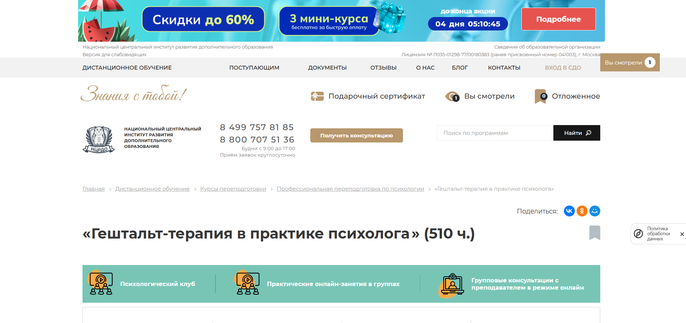
- ✅ Официальный сайт: ncrdo.ru
- 💸 Цена: 46 600 ₽ (вместо 108 600 ₽)
- 💳 Рассрочка: от 1 294 ₽/мес на 36 месяцев
- 📚 Формат: удобный дистанционный формат — видеолекции, задания, тесты, доступ к библиотеке и вебинарам
- ⏳ Продолжительность: 4 месяца (510 академических часов)
- 📜 Документ: диплом о профессиональной переподготовке
- 📝 Трудоустройство: помощь в старте карьеры, HR-консультации, доступ к профессиональному комьюнити
- 🔷 Для кого подходит курс: для психологов, педагогов, студентов старших курсов, желающих освоить гештальт-подход и работать в индивидуальной или групповой терапии
Особенности:
Программа создана для тех, кто хочет освоить методы гештальт-терапии в индивидуальной и групповой психотерапии. Обучение проходит в онлайн-формате с поддержкой преподавателей-практиков. Студенты получают доступ к ЭБС, лекциям, методическим материалам и практическим заданиям. Формат обучения позволяет совмещать курс с работой или учебой. После окончания курса выдается диплом, дающий право на ведение профессиональной деятельности. Курс актуален для тех, кто планирует работать как семейный психолог, вести групповую терапию или практиковать индивидуальную терапию по гештальт-подходу.
Чему учатся студенты:
- Принципам гештальт-терапии и циклу контакта
- Методам работы с детьми и в семейном консультировании
- Проведению групповой терапии и индивидуальных сессий
- Применению техник сновидений и анализа чувств
- Навыкам консультирования и психодиагностики
- Построению терапевтических отношений и выявлению сильных сторон клиента
Преподаватели:
- Тышкевич Марина Юрьевна — опыт научно-практической деятельности с 2006 года
- Шевченко Дария Игоревна — практикует с 2018 года
- Салихова Мария Романовна — стаж с 2007 года
- Драчкова Виктория Олеговна — работает с 2012 года
Преимущества:
- Поддержка преподавателей на всех этапах дистанционного обучения
- Гибкий график прохождения заданий и тестов
- 3 попытки на итоговую аттестацию, неограниченное количество пересдач модулей
- Доступ к ЛитРес и Библиоклубу в подарок
- Практикоориентированная программа, основанная на реальных кейсах
- Курс соответствует требованиям ФГОС и профессиональных стандартов
- Документы вносятся в Федеральный реестр об образовании
Отзывы учеников:
По данным с Яндекс, Google, 2ГИС и других площадок, студенты чаще всего отмечают высокий уровень организации дистанционного формата, профессионализм преподавателей, удобную платформу для обучения и насыщенность практическими заданиями. Отзывы подтверждают, что курс помогает применять знания на практике и уверенно стартовать в профессии гештальт-терапевта.
Перейти на официальный сайт курса14. Гештальт-терапия в практике психолога – Центральная академия профессиональной переподготовки и повышения квалификации кадров
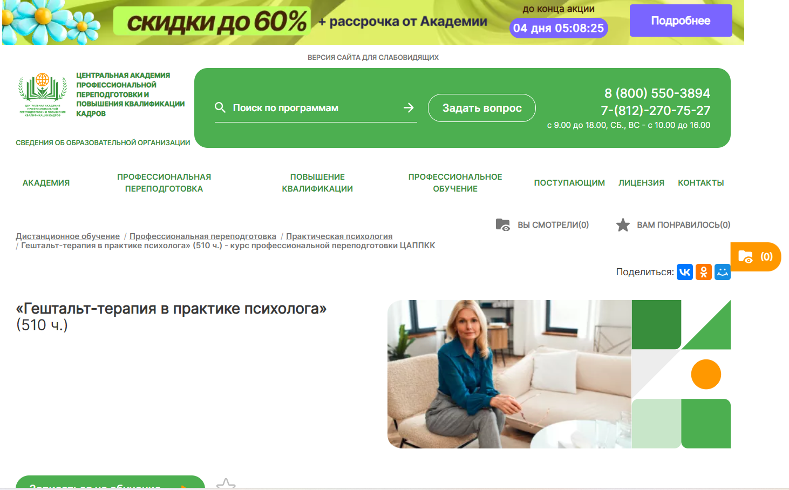
- ✅ Официальный сайт: appkk.ru
- 💸 Цена: 36 800 ₽ (полная стоимость со скидкой — вместо 54 600 ₽)
- 💳 Рассрочка: от 1 022 ₽/мес. на 36 месяцев
- 📚 Формат: дистанционный формат, включает видеоуроки, тесты, задания, библиотеку вебинаров, аудиолекции
- ⏳ Продолжительность: 4 месяца (510 часов)
- 📜 Документ: диплом о профессиональной переподготовке, внесён в ФИС ФРДО
- 📝 Трудоустройство: поддержка от HR-наставника после окончания — помощь с резюме, карьерным ростом, подбором вакансий
- 🔷 Для кого подходит курс: психологам, психотерапевтам, специалистам в области индивидуальной, групповой и семейной терапии, а также студентам с профильным образованием
Особенности:
Обучение проходит в удобной дистанционной форме с доступом ко всем материалам 24/7. Студенты получают знания по гештальт-подходу, участвуют в практических занятиях и осваивают методы гештальт-терапии. Курс составлен опытными методистами и преподавателями практиками. В обучении используется авторская методика, которая соответствует профессиональным стандартам и требованиям ФГОС. Все документы о завершении обучения вносятся в федеральный реестр. После прохождения курса слушатели могут применять полученные навыки в индивидуальной терапии, семейном консультировании и групповой психотерапии.
Чему учатся студенты:
- Применению гештальт-подхода в личной и групповой терапии
- Работе с эмоциями и переживаниями клиентов
- Навыкам психологического консультирования
- Построению терапевтических отношений
- Использованию техник гештальт-терапии в онлайн и офлайн формате
Преподаватели:
- Программа разработана методистами Академии на основе авторских методик преподавателей-практиков
Преимущества:
- Бессрочный доступ к материалам и библиотеке вебинаров
- Техподдержка 7 дней в неделю с 9:00 до 21:00
- Обучение можно совмещать с работой или учёбой
- Выдача диплома установленного образца с внесением в реестр
- Курс подходит для освоения профессии гештальт-терапевта с нуля
- Поддержка в трудоустройстве после окончания
- Личное сопровождение куратора на всём этапе обучения
Отзывы учеников:
Студенты ЦАППКК высоко оценивают дистанционный формат обучения, профессионализм преподавателей и доступность материалов. Особенно часто отмечается, что курс помогает получить качественную базу для практической психотерапии и личной терапии. Также отмечают поддержку после завершения программы и помощь в карьерном развитии.
Перейти на официальный сайт курса15. Онлайн-курсы гештальт-терапии — Международная школа профессий
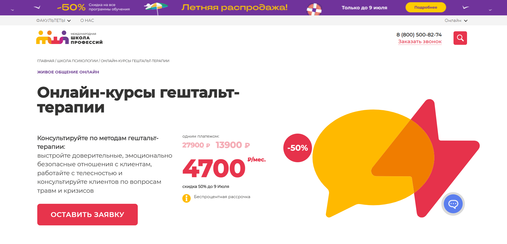
- ✅ Официальный сайт: online.videoforme.ru
- 💸 Цена: от 13 900 ₽ (скидка 50%), полная стоимость от 27 900 ₽
- 💳 Рассрочка: беспроцентная, от 4 700 ₽/мес.
- 📚 Формат: видеолекции, интерактивные вебинары, практические задания, доступ к записям, живое онлайн-общение с наставниками.
- ⏳ Продолжительность: 5 недель, 10 занятий по 1,5 часа, 2 занятия в неделю.
- 📜 Документ: сертификат о прохождении курса.
- 📝 Трудоустройство: возможность начать практику еще во время обучения, поддержка от наставников, помощь с проектом.
- 🔷 Для кого подходит курс: начинающим, практикующим психологам, специалистам по индивидуальной терапии, интересующимся гештальт-подходом, семейным консультантам и желающим углубить навыки в дистанционном обучении.
Особенности:
Программа подходит для тех, кто хочет освоить практическую психотерапию в дистанционном формате. Это удобный формат, который позволяет совмещать обучение с работой или путешествиями. Студенты изучают методы гештальт-терапии, участвуют в практике и развивают навыки консультирования под руководством опытных гештальт-терапевтов. Программа построена по принципам гештальт-терапии и включает работу с телесностью, кризисами, травмой, метафорами и образами. Возможно участие в формате индивидуальной и групповой терапии. Обучение проходит в онлайн-формате без лишних затрат и с гибким расписанием. Курс соответствует стандартам профессиональных направлений психотерапии и поможет подготовиться к личной практике или семейному консультированию. Подходит также для тех, кто интересуется семейной терапией, личной терапией и завершением базового психологического образования.
Чему учатся студенты:
- Применять методы гештальт-терапии в индивидуальной и групповой практике
- Выстраивать терапевтические отношения с клиентами
- Работать с телесностью и эмоциональными состояниями
- Анализировать и интерпретировать образы, метафоры, сны
- Проводить консультации по вопросам травм и кризисных состояний
- Использовать принципы гештальт-подхода в семейной терапии
- Понимать концепции self, поля и контактных нарушений
Преподаватели:
- Наставники курса — более 1000 практикующих специалистов
- Каждый наставник сопровождает студента от теории до практики
- Консультации по проектам и сопровождение в построении практики
Преимущества:
- Обучение доступно в дистанционном формате без отрыва от работы
- Практическая направленность с акцентом на реальные кейсы
- Возможность совмещать обучение с другими видами деятельности
- Поддержка на всех этапах от профессиональных гештальт-терапевтов
- Подходит для индивидуальной, семейной и групповой терапии
- Гибкий график и доступ к материалам на 3 месяца
- Возможность оплатить курс по соцпрограммам: маткапитал, соцконтракт
- Курс соответствует стандартам профессионального консультирования
Отзывы учеников:
Студенты высоко оценивают «живое» общение с преподавателями, гибкий график и сильную практическую часть курса. Часто отмечают удобный дистанционный формат, помощь наставников, доступность материалов и возможность начать практику уже во время обучения. Отдельное внимание уделяется индивидуальному подходу и реальной пользе от курса для будущей профессии психолога.
Перейти на официальный сайт курса16. Гештальт-терапия и супервизия — Международный Институт Гештальт-Анализа и Супервизии
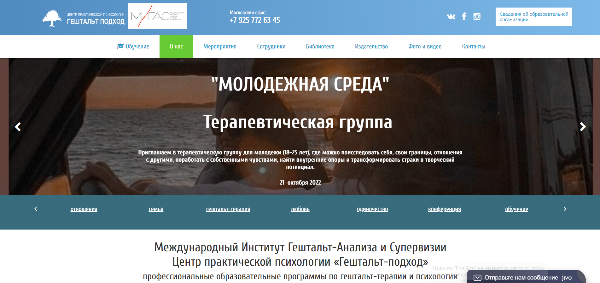
- ✅ Официальный сайт: gestalting.ru
- 💸 Цена обучения: уточняется индивидуально по телефону +7 925 772 63 45.
- 💳 Рассрочка: доступна по запросу.
- 📚 Формат: удобный дистанционный формат с возможностью очных групповых сессий, теоретический материал, супервизии, видеоуроки.
- ⏳ Продолжительность: зависит от уровня подготовки и программы (минимум 3 ступени).
- 📜 Документ: сертификат гештальт-терапевта, диплом о дополнительной профессиональной переподготовке.
- 📝 Трудоустройство: лучшие выпускники становятся сотрудниками института или партнерами.
- 🔷 Для кого подходит курс: для начинающих и практикующих психологов, желающих освоить гештальт-подход и повысить профессиональный уровень.
Особенности:
Программа строится по принципам гештальт-терапии: акцент на осознанность, работу в моменте «здесь и сейчас» и развитие ответственности. Студенты проходят как индивидуальную, так и групповую терапию, что позволяет сформировать собственную терапевтическую идентичность. Обучение проводится в соответствии с международными стандартами, включая требования Европейской ассоциации гештальт-терапии (EAGT). Центр активно развивается с 2004 года и предлагает форматы обучения, которые легко совмещать с работой. Предусмотрены интенсивы, конференции и супервизии для глубокого освоения практической психотерапии.
Чему учатся студенты:
- Методам гештальт-терапии в индивидуальной и групповой работе
- Принципам гештальт-подхода и техникам осознанности
- Навыкам консультирования и супервизии
- Работе с чувствами, границами и внутренними опорами клиента
- Применению гештальт-терапии в семейном консультировании и бизнесе
Преподаватели:
- Третьяк Леонид Леонидович — автор книги «Практическая неврозология», преподаватель и практикующий гештальт-терапевт
- Максим Пестов — автор книги об эмоциональной зависимости, преподаватель программы
- Команда опытных супервизоров и гештальт-терапевтов с многолетней практикой
Преимущества:
- Удобный формат дистанционного обучения
- Обязательный личный терапевтический опыт для студентов
- Сильная связь с практической психотерапией и профессиональной деятельностью
- Супервизии и участие в клинических конференциях
- Программы соответствуют стандартам европейской ассоциации
- Интенсивы и мастер-классы от практикующих специалистов
- Поддержка на всех этапах обучения
- Возможность карьерного роста после завершения программы
Отзывы учеников:
Студенты часто отмечают глубину личного опыта, сильную поддержку от преподавателей, профессиональную супервизию и возможность применения полученных знаний в реальной практике. Также ценится гибкость форматов и высокий уровень организации учебного процесса.
Перейти на официальный сайт курсаКто такой гештальт-терапевт?
Гештальт-терапевт — это специалист в области психотерапии, который использует гештальт-подход для помощи людям в решении психологических проблем. Этот подход направлен на осознание текущих мыслей, чувств и действий пациента, а также на выявление неосознанных блоков и конфликтов, которые могут мешать нормальной жизни. Главной целью работы гештальт-терапевта является помощь клиенту в осознании себя, улучшении межличностных отношений и достижении внутренней гармонии.
Что делают гештальт-терапевты и чем занимаются?
Гештальт-терапевты занимаются решением множества психологических проблем с помощью различных методов и техник. Они помогают клиентам:
- Осознать свои чувства и реакции на происходящее в жизни.
- Работать с внутренними конфликтами и неосознанными паттернами поведения.
- Развивать навыки саморегуляции и стрессоустойчивости.
- Улучшить отношения с близкими и коллегами.
- Преодолеть чувство тревоги, депрессии или безысходности.
В процессе терапии гештальт-терапевт использует различные методы: от работы с телесными ощущениями до ролевых игр и "порождающих" упражнений, помогающих взглянуть на проблему с новой стороны.
Что должен знать и уметь гештальт-терапевт?
Гештальт-терапевт должен обладать рядом знаний и навыков, чтобы эффективно работать с клиентами. Среди них:
- Теоретическая база — глубокое знание основ гештальт-подхода, психологии личности, психоанализа, а также основных принципов работы с клиентами.
- Эмпатия и внимательность — способность глубоко воспринимать и понимать переживания клиента, что способствует созданию доверительной атмосферы.
- Коммуникативные навыки — умение устанавливать контакт, задавать вопросы, помогать клиенту осознавать скрытые аспекты своих эмоций и поведения.
- Работа с телесными ощущениями — часто клиентам помогают осознавать свои чувства через работу с телом, что является неотъемлемой частью гештальт-терапии.
- Инструменты и техники — знание различных терапевтических методов, таких как упражнения на осознание, "порождающие" техники, ролевые игры, упражнения для улучшения контакта с собой и другими.
Востребованность и зарплата гештальт-терапевта в России в 2026 году
Востребованность гештальт-терапевтов в России продолжает расти, особенно в крупных городах. В 2026 году предполагается увеличение спроса на психологические услуги из-за роста осведомленности о психическом здоровье и распространения психотерапевтических практик. Многие люди начинают понимать важность работы с психологом для улучшения качества жизни.
Зарплата гештальт-терапевта в России в 2026 году зависит от региона, опыта специалиста и формата работы (индивидуальные консультации, групповые сеансы и т.д.). В среднем, начинающий терапевт может зарабатывать от 40 000 до 60 000 рублей в месяц, в то время как более опытные специалисты получают от 70 000 до 120 000 рублей и выше, особенно если работают в крупных городах.
Как стать гештальт-терапевтом и где учиться?
Стать гештальт-терапевтом можно, пройдя специализированное обучение в области психотерапии. Основные этапы:
- Получение базового образования — обычно необходимо высшее образование в области психологии или психиатрии.
- Прохождение курсов по гештальт-терапии — специализированные курсы, которые позволяют приобрести теоретические знания и практические навыки работы по гештальт-методике.
- Практика под наставничеством — обязательная работа с опытными терапевтами, где будущий специалист получает практический опыт.
- Получение сертификации — для работы с клиентами важно пройти сертификацию в авторитетных психологических ассоциациях.
Многие известные учебные центры и университеты в России предлагают программы, связанные с гештальт-подходом, такие как Институт психотерапии и психологического консультирования (ИППК) или Центр Гештальт-терапии в Москве.
Почему стоит выбрать карьеру гештальт-терапевта?
Работа гештальт-терапевтом — это не только психологическая помощь другим, но и возможность постоянно развиваться, учиться новым методам и помогать людям достигать гармонии в их жизни. В отличие от многих других профессий, гештальт-терапевт работает не только с внешними проблемами, но и с личной практикой, что делает профессию глубоко личной и развивающей.
Гештальт-терапевт — это ключевая фигура в области психотерапии, способная помочь людям преодолеть личные кризисы, улучшить психоэмоциональное состояние и наладить отношения с окружающими. Для того чтобы стать успешным гештальт-терапевтом, необходимо не только получить образование, но и развить глубокие коммуникативные и эмпатические навыки. В 2026 году профессия будет продолжать набирать популярность, предлагая высокие перспективы для специалистов в этой области.
Какие методы гештальт-терапии применяются в процессе обучения?
Методы гештальт-терапии включают такие подходы, как работа с осознанием, контактами, феноменологический подход и техники «пустого стула». Эти методы активно используются на практических занятиях в рамках программ обучения, что помогает ученикам развивать навыки, необходимые для успешной практики психологического консультирования.
Какова структура курса обучения гештальт-терапии?
Обучение гештальт-терапевта состоит из нескольких этапов: теоретические занятия, практические семинары и супервизии. Студенты изучают основы гештальт-терапии, применяют методы психотерапии в группе и на индивидуальных сессиях, а также участвуют в групповых консультациях и семейной терапии.
Что такое гештальт-подход в психотерапии и как он используется на обучении?
Гештальт-подход в психотерапии ориентирован на целостное восприятие клиента, его восприятие здесь и сейчас. В процессе обучения будущие гештальт-терапевты осваивают основные принципы гештальт-подхода, включая осознание и принятие опыта клиента, создание терапевтического контакта и развитие эмоциональной осведомленности.
Какую квалификацию можно получить по завершению обучения?
После завершения обучения гештальт-терапевты получают диплом и сертификат, которые подтверждают их квалификацию в области гештальт-подхода. Эти сертификаты соответствуют международным стандартам и дают возможность работать в различных областях психотерапевтической практики, включая индивидуальную терапию, семейное консультирование и групповые консультации.
Какие форматы обучения доступны для гештальт-терапевтов?
Обучение гештальт-терапии доступно в разных форматах: очные курсы, дистанционное обучение и гибкие форматы, которые могут включать видеозанятия и вебинары. Эти форматы позволяют совмещать обучение с работой, а также обеспечивают доступ к учебным материалам и консультациям с преподавателями.
Как проходит обучение в Москве и какие учебные центры предлагают курсы гештальт-терапии?
В Москве обучающие программы по гештальт-терапии предлагают различные институты гештальта и школы гештальт-терапии. Курсы включают теоретические занятия, практическую психотерапию и супервизии. Программы подготовки аккредитованы международными ассоциациями гештальт-терапевтов и соответствуют европейским стандартам.
Можно ли пройти обучение онлайн?
Да, обучение гештальт-терапии доступно в онлайн формате. Удобный дистанционный формат обучения позволяет совмещать курсы с личной практикой и предоставляет доступ к материалам и занятиям на онлайн-платформах. Программы обучения включают как теоретические, так и практические материалы, что позволяет студентам развивать навыки консультирования в удобном формате.
Какие навыки гештальт-терапевта можно развить на курсе обучения?
На курсе обучения гештальт-терапевта студенты развивают навыки ведения индивидуальной терапии, групповых консультаций, семейного консультирования, а также осваивают методы психотерапии, такие как работа с эмоциями, контактами и психоаналитическими техниками. Эти навыки необходимы для эффективного взаимодействия с клиентами и создания успешных терапевтических отношений.
Какие требования предъявляются к студентам на курсе по гештальт-терапии?
Для участия в курсе гештальт-терапии необходимо наличие базового психологического образования или опыта работы в психотерапевтической практике. Также важно пройти вступительные испытания, которые могут включать собеседование и тестирование. Участники курса должны быть готовы к интенсивной практике и развитию личных навыков самосознания.
Каковы преимущества гештальт-терапии для клиентов?
Гештальт-терапия помогает клиентам достигать глубокого понимания своих эмоций и поведения, улучшать межличностные отношения и справляться с психологическими трудностями. Использование гештальт-подхода позволяет клиенту осознавать свои проблемы в контексте настоящего момента, что способствует более эффективному решению личных и эмоциональных вопросов.
Сколько времени длится обучение?
Продолжительность курса обучения гештальт-терапии зависит от программы, но обычно она составляет от 1 до 3 лет. В это время студенты проходят как теоретические занятия, так и практические семинары, а также выполняют обязательные задания и супервизии. Программы подготовки обычно разделены на несколько ступеней, включая базовое и углубленное обучение.
Какие перспективы после завершения обучения гештальт-терапии?
После завершения обучения гештальт-терапевт может начать свою практику в качестве индивидуального терапевта или работать в рамках групповой психотерапии и семейного консультирования. Выпускники могут работать в различных организациях, таких как психологические центры, частные практики или образовательные учреждения. Также существует возможность дальнейшего повышения квалификации через профессиональные курсы и международные программы.
Можно ли совмещать обучение работой?
Да, обучение гештальт-терапии позволяет совмещать учебу с профессиональной деятельностью. Удобный дистанционный формат и гибкое расписание учебных групп делают возможным прохождение курса для людей с насыщенным рабочим графиком. Также можно выбрать курсы с вечерними занятиями или интенсивные программы, которые проходят на выходных.
Как можно пройти обучение гештальт-терапевта дистанционно?
Дистанционное обучение гештальт-терапевта позволяет студентам получать теоретическую и практическую подготовку через онлайн-платформы. Участники курса могут проходить занятия, участвовать в видеоконференциях и выполнять практические задания на платформе, которая доступна в любое удобное время. Такая форма обучения идеально подходит для людей, которые не могут посещать занятия очно.
Какие требования предъявляются к завершению курса гештальт-терапии?
Для завершения курса гештальт-терапии необходимо успешно сдать экзамены, пройти супервизию и выполнить практическую работу. После успешного окончания обучения выпускники получают диплом и сертификат гештальт-терапевта, что позволяет им практиковать психотерапию в различных направлениях, включая индивидуальные, групповые и семейные консультации.
------------------------------------------------
Реклама. Информация о рекламодателе по ссылкам в статье.